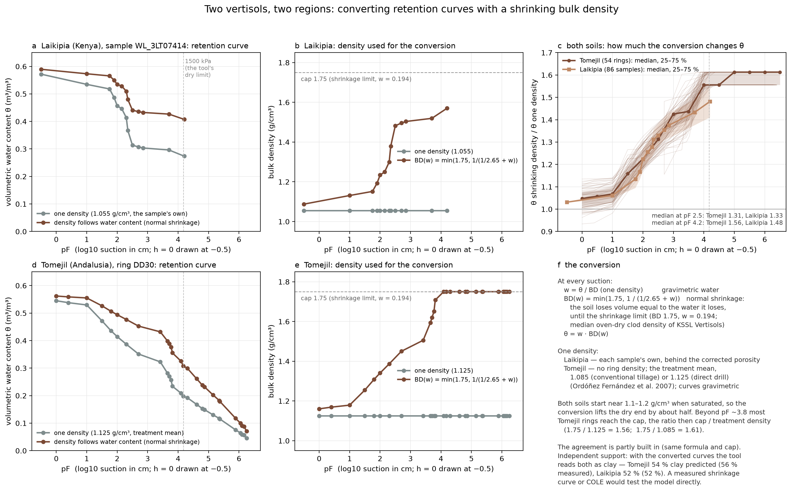

Converting vertisol retention curves with a shrinking bulk density: two examples
Laikipia (Kenya) and Tomejil (Andalusia, Spain) · py_HB_texture · R. Muñoz-Carpena, 12 October 2026
Why
Retention curves are often measured as gravimetric water and made volumetric with one bulk density per sample. In a vertisol that misrepresents the soil: swelling clays shrink as they dry, so their bulk density rises along the curve, and one wet-state density understates the water held at the dry end. This note applies the same variable-density correction to two vertisols from two regions, shows it step by step for one sample of each, compares how much it changes the curves, and reports its effect on the texture and Ks the tool predicts from them.
The two examples
| Soil | Data | Clay | One density used | Worked example |
|---|---|---|---|---|
| Laikipia, Kenya (vertic clays; Willard et al., under review) | 86 cores, volumetric as released, converted with each sample's own density | median 52 % | the sample's own (median 1.05 g/cm³) | WL_3LT07414: clay 58 %, sand 28 %, silt 14 %, density 1.055 g/cm³ |
| Tomejil, Carmona, Spain (Chromic Haploxerert; Vanderlinden et al. 2017, 2021) | 54 rings, 0–5 cm, gravimetric; no density per ring | 56 % | the tillage treatment's mean: 1.085 (conventional) or 1.125 g/cm³ (direct drill; Ordóñez Fernández et al. 2007) | DD30 (direct drill), the median ring at pF 4.2 |
Steps, at each measured suction
- Gravimetric water:
w = θ / BD₁, with BD₁ the one density above (Tomejil's curves are already gravimetric, so this step only applies to Laikipia). The standard mass–volume relation, with water density 1 g/cm³ (Hillel 1998). - Specific volume under normal shrinkage, where the soil loses volume equal to the water it loses:
v = 1/ρs + w, with ρs = 2.65 g/cm³, the conventional mineral particle density (Blake and Hartge 1986) (cm³ of soil per g of solids). This is the saturation line of the shrinkage curve, the "normal" phase of Haines (1923) and Stirk (1954), in the specific-volume form of McGarry and Malafant (1987); Bronswijk (1988) used it to model swelling clays. - Bulk density:
BD = min(1.75, 1/v). The cap stands for the density at which shrinkage stops (here w = 1/1.75 − 1/2.65 = 0.194). 1.75 g/cm³ is the median oven-dry clod density of US Vertisols like these two (KSSL; clay 45–65 %, clod density at 33 kPa below 1.25 g/cm³; 1.54–1.90 for the middle 80 %; Soil Survey Staff 2014a and the KSSL database). The dry-end density reported for the Tomejil vertisol, 1.6 g/cm³ (Vanderlinden et al. 2021), is a more conservative alternative and gives the same texture results (see How general is the cap? below). This step is a simplification of ours: measured shrinkage curves have structural, normal, residual and zero phases (Mitchell 1992; Groenevelt and Grant 2001; Peng and Horn 2005; Cornelis et al. 2006), and in the residual phase air enters and shrinkage slows. Here normal shrinkage runs up to the cap and then stops, with no residual phase, and the cap is not measured on each soil. - New volumetric water:
θ_new = w · BD, the mass–volume relation of step 1 with the shrinking density. The one-density curve isθ₁ = w · BD₁.
Laikipia, sample WL_3LT07414 (BD₁ = 1.055 g/cm³): never reaches the cap (densest point 1.57 g/cm³)
| h (kPa) | pF | θ one density | w (g/g) | v (cm³/g) | BD(w) (g/cm³) | θ new | new / one |
|---|---|---|---|---|---|---|---|
| 0.00 | – | 0.572 | 0.542 | 0.919 | 1.088 | 0.590 | 1.03 |
| 0.98 | 1.00 | 0.535 | 0.507 | 0.884 | 1.131 | 0.573 | 1.07 |
| 5.51 | 1.75 | 0.518 | 0.491 | 0.868 | 1.152 | 0.565 | 1.09 |
| 7.79 | 1.90 | 0.486 | 0.461 | 0.838 | 1.193 | 0.550 | 1.13 |
| 9.81 | 2.00 | 0.457 | 0.433 | 0.810 | 1.234 | 0.534 | 1.17 |
| 13.85 | 2.15 | 0.446 | 0.423 | 0.800 | 1.250 | 0.528 | 1.18 |
| 19.57 | 2.30 | 0.414 | 0.392 | 0.769 | 1.300 | 0.510 | 1.23 |
| 21.95 | 2.35 | 0.367 | 0.348 | 0.725 | 1.379 | 0.480 | 1.31 |
| 31.01 | 2.50 | 0.314 | 0.297 | 0.675 | 1.482 | 0.441 | 1.40 |
| 49.15 | 2.70 | 0.307 | 0.291 | 0.669 | 1.496 | 0.436 | 1.42 |
| 69.43 | 2.85 | 0.303 | 0.288 | 0.665 | 1.504 | 0.433 | 1.43 |
| 491.50 | 3.70 | 0.296 | 0.281 | 0.658 | 1.519 | 0.427 | 1.44 |
| 1554.25 | 4.20 | 0.274 | 0.260 | 0.637 | 1.570 | 0.407 | 1.49 |
Tomejil, ring DD30 (BD₁ = 1.125 g/cm³), points up to 1500 kPa
| h (kPa) | pF | θ one density | w (g/g) | v (cm³/g) | BD(w) (g/cm³) | θ new | new / one |
|---|---|---|---|---|---|---|---|
| 0.10 | 0.00 | 0.545 | 0.484 | 0.862 | 1.160 | 0.562 | 1.03 |
| 0.25 | 0.40 | 0.538 | 0.478 | 0.855 | 1.169 | 0.559 | 1.04 |
| 0.98 | 1.00 | 0.530 | 0.471 | 0.848 | 1.179 | 0.555 | 1.05 |
| 3.10 | 1.50 | 0.472 | 0.419 | 0.797 | 1.255 | 0.526 | 1.12 |
| 6.19 | 1.80 | 0.435 | 0.387 | 0.764 | 1.308 | 0.506 | 1.16 |
| 9.81 | 2.00 | 0.415 | 0.369 | 0.746 | 1.341 | 0.494 | 1.19 |
| 19.61 | 2.30 | 0.387 | 0.344 | 0.721 | 1.387 | 0.477 | 1.23 |
| 49.03 | 2.70 | 0.351 | 0.312 | 0.690 | 1.450 | 0.453 | 1.29 |
| 254.97 | 3.41 | 0.323 | 0.287 | 0.664 | 1.505 | 0.432 | 1.34 |
| 441.30 | 3.65 | 0.281 | 0.250 | 0.627 | 1.594 | 0.398 | 1.42 |
| 500.14 | 3.71 | 0.270 | 0.240 | 0.617 | 1.620 | 0.389 | 1.44 |
| 578.59 | 3.77 | 0.257 | 0.228 | 0.606 | 1.651 | 0.377 | 1.47 |
| 637.43 | 3.81 | 0.234 | 0.208 | 0.585 | 1.708 | 0.355 | 1.52 |
| 1206.22 | 4.09 | 0.210 | 0.186 | 0.564 | 1.750 | 0.326 | 1.56 |
| 1461.19 | 4.17 | 0.198 | 0.176 | 0.554 | 1.750 | 0.308 | 1.56 |
DD30's 12 WP4 readings beyond 1500 kPa (to 175 MPa) all sit at the cap, ratio 1.56; the tool fits curves up to 1500 kPa.

How the two compare
| Laikipia (86 samples) | Tomejil (54 rings) | |
|---|---|---|
| One density | the sample's own, median 1.05 g/cm³ | treatment mean, 1.085 / 1.125 g/cm³ |
| Shrinking density at the wettest point (median) | 1.09 g/cm³ | 1.16 g/cm³ |
| Shrinking density at 1500 kPa (median) | 1.54 g/cm³ | 1.75 g/cm³ |
| Samples at the 1.75 cap by 1500 kPa | 5 of 86 | 36 of 54 |
| θ new / θ one density, wettest point | 1.03 | 1.05 [1.01–1.08] |
| … at pF 2 (98 cm) | 1.22 [1.17–1.27] | 1.25 [1.20–1.29] |
| … at pF 2.5 (33 kPa) | 1.33 [1.28–1.38] | 1.32 [1.27–1.35] |
| … at pF 3.7 (490 kPa) | 1.43 [1.38–1.49] | 1.50 [1.46–1.54] |
| … at pF 4.2 (1500 kPa) | 1.48 [1.41–1.55] | 1.58 [1.56–1.61] |
| Texture as a new source, one density: clays read as clay; predicted vs measured clay | 77.0 %; 43.0 % vs 51.5 % | 81.5 %; 39.8 % vs 55.6 % |
| … shrinking density (cap 1.75) | 93.2 %; 51.3 % vs 51.5 % | 100 %; 53.2 % vs 55.6 % |
| Water left at 330 cm, as a share of saturation (reference clays: 82 %), one → shrinking density | 64–65 % → 80–81 % in both soils | |
| Ks, kNN median, one → shrinking density | 3.1 → 0.093 cm/h | 2.3 → 0.080 cm/h |
| Ks, physical estimate, one → shrinking density | 5.5 → 1.34 cm/h | 6.3 → 1.72 cm/h |
| kNN and physical Ks within a factor of 10 of each other, one → shrinking density | 98 % → 43 % | 91 % → 6 % |
| Within a factor of 10 of the field permeameter (Laikipia, median 24.8 cm/h), kNN; physical, one → shrinking density | 47 % → 13 %; 51 % → 45 % | not measured |
Medians, with the 25–75 % range in brackets. Laikipia's wettest point is saturation (h = 0), Tomejil's
h = 1 cm. Texture and Ks: each soil predicted as a new source (its own table removed from the reference) with
the current tool (test_caps.py). The shrinking-density curves are the ones the tool's reference now holds,
so these rows match the tool's own validation of both soils.
How general is the cap?
An earlier version of this note used 1.6 g/cm³, the dry-end density of one Spanish vertisol, which may be contested for Laikipia. The cap used here, 1.75 g/cm³, rests on a general basis in the US National Cooperative Soil Survey Soil Characterization Database (KSSL): every natural clod is weighed and measured at 33 kPa and again oven-dry (Saran-coated clod method; Grossman et al. 1968; Soil Survey Staff 2014a), the measurement behind the coefficient of linear extensibility (COLE) used to recognize Vertisols (Soil Survey Staff 2014b). In the model of step 3, the oven-dry clod density is the cap: the density a clod reaches once it has stopped shrinking. Drawn from the database's horizons with both densities:
| KSSL horizons | Horizons (pedons) | Clod density at 33 kPa, median | Oven-dry clod density, median [10–90 %] | COLE, median |
|---|---|---|---|---|
| All Vertisols | 4,188 (687) | 1.30 | 1.80 [1.58–1.96] | 0.115 |
| Vertisols, clay 45–65 % | 2,444 (581) | 1.29 | 1.82 [1.62–1.97] | 0.119 |
| Vertisols, clay 45–65 %, clod density at 33 kPa below 1.25 (like Laikipia and Tomejil) | 828 (324) | 1.18 | 1.75 [1.54–1.90] | 0.143 |
| Vertic subgroups of other orders, clay 45–65 % | 1,126 (415) | 1.30 | 1.77 [1.50–1.94] | 0.102 |
| Any order, clay 45–65 %, COLE ≥ 0.09 | 4,367 (1,816) | 1.27 | 1.81 [1.57–1.96] | 0.121 |
Densities in g/cm³; COLE computed as (oven-dry / 33 kPa density)1/3 − 1. Of the Vertisols with clay 45–65 %, 92 % dry denser than 1.6 g/cm³ and 80 % denser than 1.7. Across them the oven-dry density rises with the 33 kPa density (oven-dry ≈ 0.615 × BD₃₃ + 1.011, r = 0.50), which gives a per-sample cap: 1.66 for WL_3LT07414 (BD₁ 1.055), 1.70 and 1.68 for the Tomejil treatments.
1.6 and 1.75 bracket the truth. The oven-dry density is an upper bound for where normal shrinkage ends, since
real clods keep shrinking slowly through the residual phase before they are fully dry (the long normal phase of
Texas Vertisols in Yule and Ritchie 1980 is one measured example); the model of step 3 has no residual phase, so a
1.75 cap would push the dry end slightly too high, and 1.6 errs the other way. The texture result does not depend
on which is used (each soil predicted as a new source, its own table removed from the reference;
test_caps.py):
| Shrinkage cap | Laikipia: exact class | Laikipia: clays read as clay (n = 74) | Laikipia: predicted clay (51.5 %) | Tomejil: rings read as clay (n = 54) | Tomejil: predicted clay (55.6 %) |
|---|---|---|---|---|---|
| none (one density) | 66.3 % | 77.0 % | 43.0 % | 81.5 % | 39.8 % |
| 1.4 | 81.4 % | 94.6 % | 47.7 % | 92.6 % | 49.2 % |
| 1.6 (Tomejil's dry density) | 81.4 % | 94.6 % | 51.1 % | 100 % | 53.2 % |
| 1.75 (KSSL median; the examples above) | 80.2 % | 93.2 % | 51.3 % | 100 % | 53.2 % |
| per sample (0.615 × BD₁ + 1.011) | 80.2 % | 93.2 % | 51.3 % | 100 % | 53.4 % |
Raising the cap from 1.6 to 1.75 changes only the points drier than about pF 3.7, where the curves are already flat: single samples' predicted clay moves by up to 6.3 points (Laikipia) and 3.3 (Tomejil), but the means move by 0.13 point or less, one Laikipia sample changes class and every Tomejil ring keeps its class. A cap of 1.4, below the shrinkage limit of most vertisols, already loses part of the gain.
What the two examples show
- The correction behaves the same in both soils. Both start near 1.1–1.2 g/cm³ when saturated, so the wet end rises only 3–5 %; through the pressure-plate range θ rises by about a quarter at pF 2 and a third at 33 kPa, and by about half at 1500 kPa (48 % for Laikipia, 58 % for Tomejil, median).
- They differ at the dry end. Tomejil's curves dry further (w = 0.18 at 1500 kPa for DD30), past the shrinkage limit (w = 0.194), so 36 of its 54 rings reach the 1.75 cap by 1500 kPa and their dry-end ratio is the cap over the treatment density (1.75 / 1.125 = 1.56, 1.75 / 1.085 = 1.61). Laikipia's driest points (w ≈ 0.26 for WL_3LT07414) are still above the limit, and only 5 of 86 samples reach the cap.
- Texture improves in both, by the same amount. With one density both soils read too coarse and seemed to lose water steeply just below saturation (64–65 % of their saturated water left at 330 cm, against 82 % for the reference clays); with the shrinking density both hold 80–81 % like the other clays, almost every clay is recognized and the predicted clay matches the measured mean. Any density that rises with drying helps, and the result hardly depends on the cap (next section).
- Ks falls in both, and is low confidence either way. Under normal shrinkage the water lost near saturation is volume lost, not pores draining, so the curve shows almost no large draining pores: the kNN Ks drops about 30-fold and the physical estimate about 4-fold, further below the dry-season field values (Laikipia: Saturo 13.5 cm/h, modified Philip–Dunne 25.4 cm/h), and the two estimates then agree within a factor of 10 for only 43 % of the Laikipia samples and 6 % of the Tomejil rings (98 % and 91 % with one density). Against the Laikipia field permeameter the kNN falls from 47 % to 13 % of samples within a factor of 10, while the physical estimate stays near half (51 % → 45 %). The low values may describe the swollen matrix, while field values are dominated by cracks; neither conversion gives a true pore-size distribution for a swelling clay.
- The agreement is partly built in. Both use the same formula and cap, and their one-density values are similar wet-state densities. The independent support is the texture result, reached separately in each soil.
References
- Blake, G.R. and Hartge, K.H. (1986). Particle density. In: Methods of Soil Analysis, Part 1, 2nd ed., Agronomy Monograph 9, ASA–SSSA, Madison, 377–382.
- Boivin, P., Garnier, P. and Tessier, D. (2004). Relationship between clay content, clay type, and shrinkage properties of soil samples. Soil Science Society of America Journal 68: 1145–1153.
- Bronswijk, J.J.B. (1988). Modeling of water balance, cracking and subsidence of clay soils. Journal of Hydrology 97: 199–212.
- Cornelis, W.M., Corluy, J., Medina, H., Hartmann, R., Van Meirvenne, M. and Ruiz, M.E. (2006). A simplified parametric model to describe the magnitude and geometry of soil shrinkage. European Journal of Soil Science 57: 258–268.
- Groenevelt, P.H. and Grant, C.D. (2001). Re-evaluation of the structural properties of some British swelling soils. European Journal of Soil Science 52: 469–477.
- Grossman, R.B., Brasher, B.R., Franzmeier, D.P. and Walker, J.L. (1968). Linear extensibility as calculated from natural-clod bulk density measurements. Soil Science Society of America Proceedings 32: 570–573.
- Haines, W.B. (1923). The volume changes associated with variations of water content in soil. Journal of Agricultural Science 13: 296–310.
- Hillel, D. (1998). Environmental Soil Physics. Academic Press, San Diego.
- McGarry, D. and Malafant, K.W.J. (1987). The analysis of volume change in unconfined units of soil. Soil Science Society of America Journal 51: 290–297.
- Mitchell, A.R. (1992). Shrinkage terminology: escape from "normalcy". Soil Science Society of America Journal 56: 993–994.
- Ordóñez Fernández, R., González Fernández, P., Giráldez Cervera, J.V. and Perea Torres, F. (2007). Soil properties and crop yields after 21 years of direct drilling trials in southern Spain. Soil & Tillage Research 94: 47–54.
- Peng, X. and Horn, R. (2005). Modeling soil shrinkage curve across a wide range of soil types. Soil Science Society of America Journal 69: 584–592.
- Soil Survey Staff (2014a). Kellogg Soil Survey Laboratory Methods Manual. Soil Survey Investigations Report No. 42, Version 5.0. USDA Natural Resources Conservation Service, Lincoln, Nebraska.
- Soil Survey Staff (2014b). Keys to Soil Taxonomy, 12th ed. USDA Natural Resources Conservation Service, Washington, DC.
- Soil Survey Staff. National Cooperative Soil Survey Soil Characterization Database (KSSL Lab Data Mart), https://ncsslabdatamart.sc.egov.usda.gov/ (SQLite snapshot used here, queried October 2026).
- Stirk, G.B. (1954). Some aspects of soil shrinkage and the effect of cracking upon water entry into the soil. Australian Journal of Agricultural Research 5: 279–290.
- Vanderlinden, K., Pachepsky, Y.A., et al. (2017). Water retention and preferential states of soil moisture in a cultivated vertisol. Soil Science Society of America Journal 81: 1–9.
- Vanderlinden, K., Pachepsky, Y., Pedrera-Parrilla, A., Martínez, G., Espejo-Pérez, A., Perea, F. and Giráldez, J. (2021). Water retention and field soil water states in a vertisol under long-term direct drill and conventional tillage. European Journal of Soil Science 72: 667–678. doi:10.1111/ejss.12967
- Willard et al. (under review). Laikipia soils (Kenya); data shared by the authors, unpublished.
- Yule, D.F. and Ritchie, J.T. (1980). Soil shrinkage relationships of Texas Vertisols: I. Small cores; II. Large cores. Soil Science Society of America Journal 44: 1285–1291 and 1291–1295.